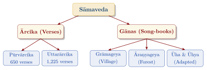
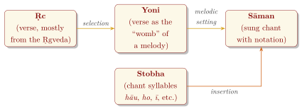
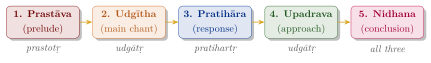
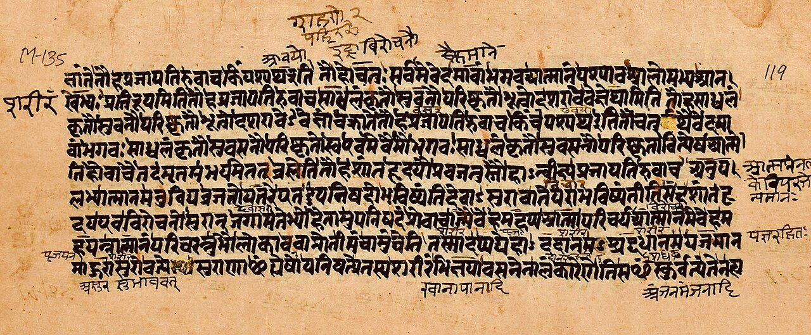

Chapter 4: The Sāmaveda: The Veda of Sacred Chant¶
Invocatory Verse
vedānāṃ sāmavedo ’smi
Among the Vedas, I am the Sāmaveda.
— Bhagavadgītā 10.22
4.1 Introduction to the Sāmaveda¶
The Sāmaveda (sāman, “chant, melody” + veda) is the Veda of sacred song. Its verses are almost all taken from the Ṛgveda, but they are arranged for singing, and its real content lies in the melodies (sāmans) to which they are sung. In the Bhagavadgītā, Kṛṣṇa names the Sāmaveda as the foremost of the Vedas, a sign of the prestige of sacred chant.
The Sāmaveda belongs to the udgātṛ, the chief chanter, who sings the sāmans at the Soma sacrifice with two assistants, the prastotṛ and the pratihartṛ. In the ritual the spoken verse (ṛc), the muttered formula (yajus) and the sung chant (sāman) complement one another.
Key Features of the Sāmaveda (Kauthuma Recension)
| Verses: | 1,875, including repetitions |
| Distinct verses: | about 1,549, all but about 75 found in the Ṛgveda |
| Primary function: | Chanting at the Soma sacrifice |
| Priests: | Udgātṛ, with Prastotṛ, Pratihartṛ and Subrahmaṇya |
| Surviving Śākhās: | Kauthuma, Rāṇāyanīya, Jaiminīya |
4.2 Structure of the Sāmaveda¶
4.2.1 The Ārcika (Verse Collection)¶
The Ārcika is the collection of verses (ṛc) on which the melodies are sung:
-
Pūrvārcika (first collection) — 585 single verses arranged by deity (Agni, Indra, Soma Pavamāna) and metre, with a further 65 verses: 55 in the Āraṇyaka section and the ten Mahānāmnī verses. Each verse serves as the “womb” (yoni) of a melody.
-
Uttarārcika (second collection) — 1,225 verses, mostly in groups of three, arranged according to their use in the ritual.
4.2.2 The Gānas (Song-Books)¶
The song-books record the melodies as actually sung, with the words modified, syllables repeated, and meaningless chant syllables inserted (Figure 4.1):
-
Grāmageya Gāna — “songs to be sung in the village”, i.e. in public ritual.
-
Āraṇyageya Gāna — “songs to be sung in the forest”, considered dangerous and taught apart.
-
Ūha Gāna and Ūhya (Rahasya) Gāna — the melodies of the first two collections adapted to the verse-groups of the Uttarārcika for use in the Soma ritual.

4.3 The Musical System of the Sāmaveda¶
The Sāmaveda song-books contain one of the oldest systems of musical notation in the world. In the Kauthuma and Rāṇāyanīya traditions, numerals written above the syllables indicate the tones; the Jaiminīya tradition uses syllabic signs.
4.3.1 The Seven Tones¶
Later Sāmavedic texts name seven tones in descending order: kruṣṭa, prathama, dvitīya, tṛtīya, caturtha, mandra and atisvārya. Many sāmans, however, use only three to five of them, and the oldest layer of chant seems to have used a narrower range. The phonetic manual Nāradīya Śikṣā (of uncertain date, but much later than the Sāmaveda) relates the Sāman tones to the notes of secular music played on the flute. Its often-quoted statement that “the first tone of the sāman singers is the madhyama of the flute” (yaḥ sāmagānāṃ prathamaḥ sa veṇor madhyamaḥ svaraḥ, 1.5.1) shows that the Sāman tones were not simply identified with Sa, Re, Ga in order. How the remaining tones correspond, and how the descending Sāman series relates to the ascending scale of later music, are questions on which musicologists differ.
4.3.2 The Notation¶
The notation of the song-books indicates the pitch of each syllable, its lengthening, and the inserted chant syllables (stobha). It does not record absolute pitch or tempo, which were learnt from a teacher; as with the recitation of the other Vedas, the oral tradition is primary and the written notation an aid to memory (Figure 4.2).

4.4 The Stobhas: Chant Syllables¶
A striking feature of Sāman chant is the insertion of stobhas—syllables or short words such as hāu, ho, hāi, ī, ū or atha—into or around the words of the verse. They have no lexical meaning in context but serve musical functions: they extend phrases, carry melodic ornaments and mark structural divisions. The Chāndogya Upaniṣad (1.13) nevertheless assigns each of them a cosmic meaning, identifying, for example, hāu with this world and hāi with the wind.
On the Udgītha
oṃ ity etad akṣaram udgītham upāsīta
One should venerate the syllable Oṃ as the Udgītha.
— Chāndogya Upaniṣad 1.1.1
4.5 The Extant Śākhās¶
Of the thousand schools traditionally ascribed to the Sāmaveda, three survive (Table 4.1):
-
Kauthuma — the most widespread; found in Gujarat, North India and parts of the South.
-
Rāṇāyanīya — textually very close to the Kauthuma; found mainly in Maharashtra and Karnataka.
-
Jaiminīya (or Talavakāra) — with its own Saṃhitā, song-books and Brāhmaṇas; preserved by small communities in Kerala and Tamil Nadu.
| Śākhā | Region | Brāhmaṇas | Upaniṣad |
|---|---|---|---|
| Kauthuma | Gujarat, North India, parts of the South | Pañcaviṃśa (Tāṇḍya), Ṣaḍviṃśa and others | Chāndogya |
| Rāṇāyanīya | Maharashtra, Karnataka | Shared with the Kauthuma | Chāndogya |
| Jaiminīya | Kerala, Tamil Nadu | Jaiminīya Brāhmaṇa; Jaiminīya Upaniṣad Brāhmaṇa | Kena (part of the Jaiminīya Upaniṣad Brāhmaṇa) |
4.6 The Sāmaveda and Indian Music¶
Indian tradition regards the Sāmaveda as the source of music, and the Gāndharvaveda, the science of music, is often listed as the Upaveda attached to it. There are real points of continuity: the Sāman tradition shows an early concern with pitch, melodic pattern and notation; the seven notes of later music are related to the Sāman tones by the Nāradīya Śikṣā; and the vocabulary of sound and its sacredness passed from the ritual into musical theory.
Historians of music are, however, cautious about a direct line of descent. The earliest systematic account of secular music, in Bharata’s Nāṭyaśāstra (compiled over several centuries, c. 200 BCE–200 CE), describes a system of grāmas (parent scales), mūrchanās and jātis that it calls gāndharva, distinct from Sāman chant. The concept of rāga first appears clearly in Mataṅga’s Bṛhaddeśī (second half of the first millennium CE), and the later Hindustani and Karnatak systems developed over the following centuries, absorbing many regional and, in the north, Persianate influences. The Sāmaveda is thus best seen as the oldest documented Indian tradition of sacred song, and one important ancestor among several, rather than as the single fountainhead of Indian classical music.
4.6.1 The Twenty-Two Śrutis¶
The Nāṭyaśāstra divides the octave into twenty-two śrutis (microtonal intervals) and assigns a fixed number to each interval of its parent scales. How these śrutis should be understood acoustically—whether as equal steps, or as intervals close to those of just intonation—has been debated by musicologists for over a century. The śruti system belongs to the tradition of secular music theory rather than to Sāman chant.
4.7 Important Sāmans¶
Hundreds of named melodies are used in the ritual. Among the most important are the six pṛṣṭha sāmans, used in the central midday chant of the Soma sacrifice:
-
Rathantara — sung on RV 7.32.22–23 (abhi tvā śūra nonumaḥ);
-
Bṛhat — sung on RV 6.46.1–2 (tvām id dhi havāmahe);
-
Vairūpa, Vairāja, Śākvara and Raivata — used, together with the first two, on successive days of the six-day period (pṛṣṭhya ṣaḍaha) of the twelve-day rite.
The Brāhmaṇas constantly pair the Rathantara and the Bṛhat, identifying the former with this world (the earth) and the latter with yonder world (the sky). The Chāndogya Upaniṣad (2.11–21) “weaves” each of these and other sāmans into a different part of the world—the Rathantara into fire, the Bṛhat into the sun, and so on—so that the chanter who knows these correspondences gains their benefits.
4.8 The Jaiminīya Tradition¶
The Jaiminīya (or Talavakāra) school preserves its own Saṃhitā, song-books and Brāhmaṇas. Its chant, preserved chiefly by Nambudiri Brahmins in Kerala and by a small community in Tamil Nadu, differs considerably in style from the Kauthuma–Rāṇāyanīya tradition, and has been studied and recorded by modern scholars (notably Asko Parpola and his colleagues). The Jaiminīya Brāhmaṇa is a large text containing many legends not found elsewhere, and its appendix, the Jaiminīya Upaniṣad Brāhmaṇa, contains the Kena Upaniṣad, named after its first word kena (“by whom?”):
Kena Upaniṣad 1.1
keneṣitaṃ patati preṣitaṃ manaḥ
kena prāṇaḥ prathamaḥ praiti yuktaḥ
keneṣitāṃ vācam imāṃ vadanti
cakṣuḥ śrotraṃ ka u devo yunakti
By whom impelled does the mind fly forth?
By whom yoked does the first breath move?
By whom impelled do people speak this speech?
What god yokes the eye and the ear?
— Kena Upaniṣad 1.1
4.9 Sound and Speech in Vedic and Later Thought¶
The Vedic tradition treated sacred sound with the utmost seriousness. Already the Ṛgveda says that speech has four “quarters”, of which three are hidden and only the fourth is spoken by human beings (RV 1.164.45). Later thinkers built on such ideas. The grammarian-philosopher Bhartṛhari (5th century CE) distinguished three levels of speech—paśyantī (“seeing”, undifferentiated), madhyamā (“middle”, mental) and vaikharī (articulated)—and the Kashmir Śaiva tradition added a fourth, transcendent level, parā. These schemes are later philosophical developments, not Vedic doctrine, although their authors saw themselves as interpreting Vedic hints.
The idea of nāda-brahman, ultimate reality as sound, is likewise a later formulation, found in Tantric, yogic and musicological works. Its roots are often traced to the Upaniṣadic meditations on Oṃ, especially in the Chāndogya Upaniṣad, which identifies the chanted Oṃ (the udgītha) as the essence of essences.
4.10 The Chāndogya Upaniṣad¶
The Chāndogya Upaniṣad, the Upaniṣad of the Kauthuma school, is one of the oldest and largest of the principal Upaniṣads (c. 6th century BCE) (Olivelle 1998); it is treated more fully in Volume 2, Upaniṣad Dīpikā. Among its teachings:
-
Meditations on Oṃ and the sāman (chapters 1–2) — the chant and its parts interpreted cosmically.
-
The teaching of Uddālaka Āruṇi to his son Śvetaketu (chapter 6) — that the whole world has one subtle essence as its self, culminating in the refrain tat tvam asi.
-
The doctrine of the five fires (pañcāgnividyā, 5.3–10) — an early account of rebirth, taught by a king to a Brahmin.
-
The teaching on the infinite (bhūman, 7.23–24) — that happiness lies only in the infinite.
Chāndogya Upaniṣad 6.8.7
sa ya eṣo ’ṇimaitadātmyam idaṃ sarvaṃ
tat satyaṃ sa ātmā tat tvam asi śvetaketo
That which is this finest essence—this whole world has it as its self.
That is the truth. That is the self. That you are, Śvetaketu.
— Chāndogya Upaniṣad 6.8.7
Advaita Vedānta took tat tvam asi as one of its “great sayings” (mahāvākya) asserting the identity of self and Brahman; other schools interpreted it differently. Joel Brereton, reading the phrase in the context of Uddālaka’s whole teaching, has argued that it means “In that way you are”, that is, the son, like everything else, has the subtle essence as his self (Brereton 1986).
4.11 The Technique of Sāman Chanting¶
A sāman used in the ritual is divided into five parts (bhakti), distributed among the three chanters (Figure 4.3):

The prastotṛ sings the prelude; the udgātṛ sings the main part and the “approach”; the pratihartṛ sings the response; and all three join in the conclusion. The Chāndogya Upaniṣad (2.2–7) interprets these parts as the worlds, the phases of rain, the seasons and other fivefold groups.
4.12 The Sāmaveda in the Ritual¶
The Sāmaveda’s main use is in the Soma sacrifice. The chants are sung in fixed groupings called stotras, each answered by a recitation (śastra) of the hotṛ priests. The seven forms (saṃsthā) of the basic Soma sacrifice are distinguished largely by the number of stotras (Table 4.2):
| Form | Stotras | Remarks |
|---|---|---|
| Agniṣṭoma | 12 | The basic model |
| Atyagniṣṭoma | 13 | |
| Ukthya | 15 | Three additional uktha chants |
| Ṣoḍaśin | 16 | A sixteenth chant |
| Vājapeya | 17 | Includes a chariot race |
| Atirātra | 29 | Continues through the night |
| Aptoryāma | 33 | The most elaborate form |


4.13 Preservation of Sāman Chanting Today¶
Sāman chanting is among the most endangered parts of the Vedic heritage, because it demands long training and is little used outside the śrauta ritual:
-
In Kerala, Nambudiri families preserve the Jaiminīya tradition, though the number of competent chanters is very small.
-
In Tamil Nadu, families continue the Kauthuma and Jaiminīya traditions; in Karnataka, chiefly the Rāṇāyanīya.
-
In Gujarat and Maharashtra, the Kauthuma and Rāṇāyanīya traditions are maintained by traditional chanters and taught in pāṭhaśālās.
Sāman chant is part of the Vedic chanting tradition recognised by UNESCO (Section 15.6).
4.14 Upaniṣadic Teachings of the Sāmaveda¶
Table 4.3 lists some key teachings; Figure 4.4 shows a manuscript page of the Chāndogya Upaniṣad.
| Upaniṣad | Teaching | Significance |
|---|---|---|
| Chāndogya | Oṃ as Udgītha (1.1) | The chanted syllable as the essence of essences |
| Chāndogya | The fivefold sāman (2.2–7) | The parts of the chant mapped onto the world |
| Chāndogya | Tat tvam asi (6.8–16) | The self as identical with the subtle essence of all |
| Chāndogya | Bhūman (7.23–24) | The infinite as the only true happiness |
| Kena | “By whom?” (1.1) | Enquiry into the power behind mind and senses |
4.15 Summary¶
The Sāmaveda, though its verses are borrowed from the Ṛgveda, is a distinct and remarkable achievement: a large repertoire of sacred melodies with their own notation, ritual system and theory, preserved orally for nearly three thousand years. Its Upaniṣads, the Chāndogya and the Kena, contain some of the most important teachings of early Indian philosophy. It is the oldest documented Indian tradition of sacred song, and an important ancestor of later Indian ideas about music and sound.
Closing Reflection
vāca ṛg rasa ṛcaḥ sāma rasaḥ sāmna udgītho rasaḥ
The essence of speech is the verse; the essence of the verse is the chant;
the essence of the chant is the Udgītha.
— Chāndogya Upaniṣad 1.1.2